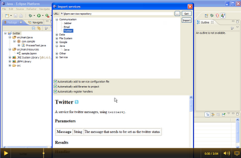

Introducing the service repository
Using jBPM5, you can introduce your own domain-specific services in your processes. By defining your own services, they show up as custom service tasks in the graphical process editor. For example, if you would like to send tweets inside your business processes, a special twitter service task can be defined, as shown in the following screenshot.
The import wizard is created as part of the latest version of the jBPM Eclipse plugin (and will be part of the next release, or you can already try it out by installing the latest plugin from the latest update site). It supports both repositories that are on your file system, or URL-based.
Click on the image below to see a screencast where we import the twitter service in a new jBPM project and create a simple process with it that sends an actual tweet.

[Note that you need the necessary twitter keys and secrets to be able to programatically send tweets to your twitter account. How to create these is explained here, but once you have these, you can just drop them in your project using a simple configuration file.]
We’re building a service repository that contains predefined services that people can use out-of-the-box if they want to: http://people.redhat.com/kverlaen/repository. Currently it only contains a few services but we will migrate all existing services there over time.
And this is where we are looking for contributions! There are tons of interesting services and excellent projects that we would like to integrate with. We would like to offer out-of-the-box integration with a lot of those, by defining them as domain-specific services and adding them to the service repository, so people can import them in their processes. So if you would like to contribute integration with a service like that (e.g. facebook, google maps, etc.), or even your own project, let us know!

{kind=link}